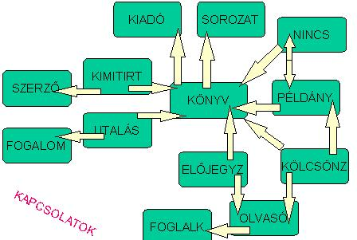

8.6. Könyvtár
A példa érdekessége az adatbázis mérete illetve az adatfolyamatok részletezése. A mintasoros illusztrációk miatt feltétlen javasolt a tanulmányozása. Itt összefoglaljuk, miből születtek az adatbázis-táblák, milyen a kapcsolati diagramja, és tárgyaljuk a legszükségesebb felhasználói funkciók adatfolyamatait.
Ismertetés
Egy könyvtár
- beszerez új könyveket (ugyanabból a könyvből több példányt)
- selejtezi az elhasznált példányokat (bizonyos idő elteltével automatikusan vagy direkt)
- karbantartja, ezért le tudja kérdezni a könyvek adatait, mint : kölcsönözhetőség, műfaj, kiadó, kiadás éve, egy vagy több szerző, kezdő és aktuális darabszám, egységár és szorzó, kölcsönzések javasolt száma, recenzió, néhány utalás, mely sorozat része
- kezeli az olvasók alapadatait, mint: születési év, foglalkozás, név, cím
- kölcsönzéseket bonyolít, azaz: kiad, visszavételez, felszólít (2-szer, a 3. már büntetés); előjegyzést vesz fel, értesít
- statisztikai kimutatásokat végez legalább évente
- forgalmi listákat hoz le adott szempontok szerint bármilyen sűrűséggel
A fentiekből látszik, hogy egy bizonyos könyv n számú példányát csak a kölcsönzéskor különböztetjük meg. Mind az n darabnak ugyanazok a fentebb felsorolt adatai, de az már a konkrét darab jellemzője, hogy kinél van, vagy hányszor kölcsönözték ki.
Pontosítások
Egy bizonyos könyvet írhatott több szerző, és egy szerzőnek több műve is lehet, ezért új relációt hozunk létre a szerzők és könyvek közé. A könyvek általában egyszerzősek, ezért felmerül a kérdés, hogy csak a többi szerzőt rakjuk-e a köztes relációba. Mivel gyorsan akarunk szerző szerint keresni, nem szabad 2 külön sorrendet fenntartani, hiszen akkor előbb össze kellene azokat fésülni. Egy bizonyos könyv utalhat több fogalomra és fordítva. Ezért itt is köztes relációba rakjuk le az utalásokat. Bizonyos könyvnek egy kiadója van, egyetlen sorozatnak a része, és fordítva nem igaz. Ilyen esetben a könyvnél jegyezzük meg a kiadó és a sorozat kódját, de megnevezésüket (a több könyvhöz való tartozásuk miatt) a kiadó- illetve sorozattörzsben tároljuk.
- A beszerzés bizonylatolása a raktárnyilvántartó rendszer része, itt most inputként kapjuk a katalógusszámot a példányszámmal. (Valószínűleg év+sorszám alakban osztanak katalógusszámot.) Nálunk történik az egyetlen példány azonosítása, azaz a katalógusszám kibővítése alkatalógusszámmal (sorszám: 1-től példányszámig).
- A tagdíj befizetését nem kötelező bizonylatolni, hiszen a kölcsönzőívbe pecsételés jelzi az azévi befizetést. Amikor adott évben először jelenik meg az olvasó, akkor fizet majd. A program így is jelezni tudja, ha tagdíjat kell szedni. Új olvasó, új ív, azaz tagdíj.
- Egy olvasónak egy foglalkozása van, de ugyanaz a foglakozása több olvasónak is lehet. Tehát lesz foglalkozástörzsünk, és minden olvasó törzsadatai között jelöljük meg az ő foglalkozáskódját.
- Ha bizonyos könyv egyetlen példánya sincs bent, előjegyezzük az olvasót, és érkezési sorrendben próbáljuk kielégíteni a kérését.
- A lejáratvizsgálat abból áll, hogy a konstansként kezelt változók ismeretében (pl. 30 napos kölcsönzési idő, a felszólítások - számuk 3 - további 15 napot jelentenek, de a 3. már a büntetéskiírás) ellenőrizzük a kölcsönzési dátum óta eltelt időt. Ha a példány elveszett, kikerül a kölcsönözhetők közül.
- Legyen a büntetés nagysága = egységár*szorzó, amiről értesítést küldünk (de az összeg beérkezését a pénzügyi osztály figyeli).
- Automatikus selejtezés-vizsgálat időszakosan történik, de a konkrét példány állapota is vezethet selejtezéshez.
Azonosítások:
- katal, az „eszmei" könyv
- alkatal, egyetlen példánya valamely könyvnek
- kiadó, adott kiadó
- sorozat, adott sorozat
- fogalom, utalásbeli fogalom
- szerző, konkrét szerző
- olvasó, egy olvasó (kölcsönzőív jelzőszáma)
- foglalk, egyfajta foglalkozás
- műfaj, egyetlen karakter (0 - 9); világszabvány
A fentiek szerint igazak az alábbi teljes függőségek:
{katal} → {cím, kiadó, kiadév, műfaj, kezdődarabszám, aktuális darabszám, egységár, szorzó, max kölcs.száma, recenzió, sorozat, kölcsönözhetőség}{katal, alkatal} → {kikölcsönözve, akt. kölcs. száma} (ha megvan a példány)
{katal, alkatal} → {kelt, selejt/lopott} (ha nincs meg a példány)
{kiadó} → {megnevezés}
{sorozat} → {elnevezés}
{szerző} → {név}
{fogalom} → {hosszúnév}
{olvasó} → {név, cím, szület.év, foglalk}
{foglalk} → {elnevezés}
{olvasó, katal} → {előjegyzés dátuma}
{olvasó, katal, alkatal, dátum} → {visszahozatal dátuma, felszólítások száma}
{katal, szerző} → {katal, szerző} („ki mit írt" miatt)
{katal, fogalom} → {katal, fogalom} („mi mire utal" miatt)
Az adatbázis az előbbi függőségek alapján:
- KÖNYV {katal, cím, kiadó, kiadév, műfaj, kezd_db, akt_db, egys_ár, szorzó, max_kölcs, recenzió, sorozat, kölcs_h}
- KIADÓ {kiadó, megnevezés}
- SOROZAT {sorozat, elnevezés}
- KIMITIRT {katal, szerző}
- SZERZŐ {szerző, név}
- UTALÁS {katal, fogalom}
- FOGALOM {fogalom, hosszúnév}
- PÉLDÁNY {katal, alkatal, kikölcs, akt_kölcs}
- OLVASÓ {olvasó, név, cím, szül_év, foglalk}
- FOGLALKOZÁS {foglalk, elnevezés}
- KÖLCSÖNZÉS {olvasó, katal, alkatal, dátum, visszahoz_dát, felszólít}
- ELŐJEGYZÉS {olvasó, katal, előjegyz_dát}
- NINCS {katal, alkatal,kelt, sel_lop}
Kapcsolati ábra:

Megjegyzések:
- a Kölcsönzés csak Példányt tartalmazhat, a Példány pedig Könyvet, de azért egy Kölcsönzés automatikusan meghatároz egy Könyvet (pl. lekérdezésnél kihagyható a Példány)
- a Példány és Nincs közötti 1:1 kapcsolat nem tűnik igaznak, mert a 2 tábla egymást kizáró példányokat tartalmazhat csak (vagy részt vesz még a kölcsönzésben, vagy már nem), de amikor egy Példány bekerül a Nincsbe, akkor léteznie kell Példányként, csak utána törlődik a felhasználó szeme elől
- a Nincs Példányra mutat, a Példány pedig Könyvre, ezért a Nincs ugyancsak meghatároz közvetlenül egy Könyvet (pl. lekérdezésnél kihagyható a Példány)
- a lezárt kölcsönzéseket érdemes elrejteni szem elől (törölt állapot bevezetése) vagy gondoskodni gyakori archiválásukról; így a nyitott kölcsönzéseket gyorsabban ellenőrizzük a lejáratvizsgálatkor, illetve találjuk meg visszahozatalnál.
Felhasználói funkciók (hierarchia nélkül):
- Törzsek karbantartása
- Könyvbeszerzés
- Könyv kikölcsönzése
- Könyv visszahozatala
- Könyv leselejtezése
- Könyv előjegyzése
- Lejárati értesítők
- Lekérdezések
- Kimutatások
Adatfolyamatok nagyvonalú tárgyalása funkciónként
- KIADÓ, SOROZAT, SZERZŐ, FOGALOM, FOGLALK mellett az OLVASÓ és a KÖNYV is ide tartozik, de a könyv beszerzésének kiemelt fontossága miatt bizonyára külön kezeljük.
-
A KÖNYV
mellett a PÉLDÁNY bővül automatikusan, és bővülhetnek a KIADÓ és a SOROZAT,
biztosan bővül a KIMITÍRT (vele bővülhet a SZERZŐ) és az UTALÁS (vele pedig a
FOGALOM).
- A KÖLCSÖNZÉS
bővítésekor bővülhet az OLVASÓ (vele pedig a FOGLALK), de kerülhet sor egy
ELŐJEGYZÉS törlésére is.
- A KÖLCSÖNZÉS
módosításával jár automatikusan egy PÉLDÁNY módosítása, mert át kell billenteni
a könyv kölcsönzésre vonatkozó állapotát.
- A NINCSbe
felveszünk, a PÉLDÁNYból törlünk egy sort, a KÖNYVben ugyanakkor módosítunk
(aktuális darabszámot).
- Az ELŐJEGYZÉS
bővül, de ennek szigorú feltétele, hogy minden PÉLDÁNYa ki legyen éppen
kölcsönözve.
- A 3-féle
értesítő nyomtatása lekérdezéssel oldható meg; olvasunk a KÖLCSÖNZÉS, KÖNYV,
OLVASÓ táblákból, miközben a felszólítások számát eggyel megnöveljük (tehát a
KÖLCSÖNZÉS módosul). Viszont abban az esetben, ha a felszólítások száma 3-ra
ugrik, lopást regisztrálunk (ld. teendők a selejtezésnél).
- Olvasunk a megfelelő táblákból
- Olvasunk a megfelelő táblákból